trackers package¶
Submodules¶
trackers.longitudinal_tracker module¶
Module containing all the elements to track the beam in the longitudinal plane.
| Authors: | Danilo Quartullo, Helga Timko, Adrian Oeftiger, Alexandre Lasheen |
|---|
- class trackers.longitudinal_tracker.LinearMap(GeneralParameters, Qs)¶
Bases: object
Linear Map represented by a Courant-Snyder transportation matrix. self.alpha is the linear momentum compaction factor. Qs is forced to be constant.
- track(beam)¶
- class trackers.longitudinal_tracker.RingAndRFSection(rf_params, solver='full')¶
Bases: object
Definition of an RF station and part of the ring until the next station, see figure.
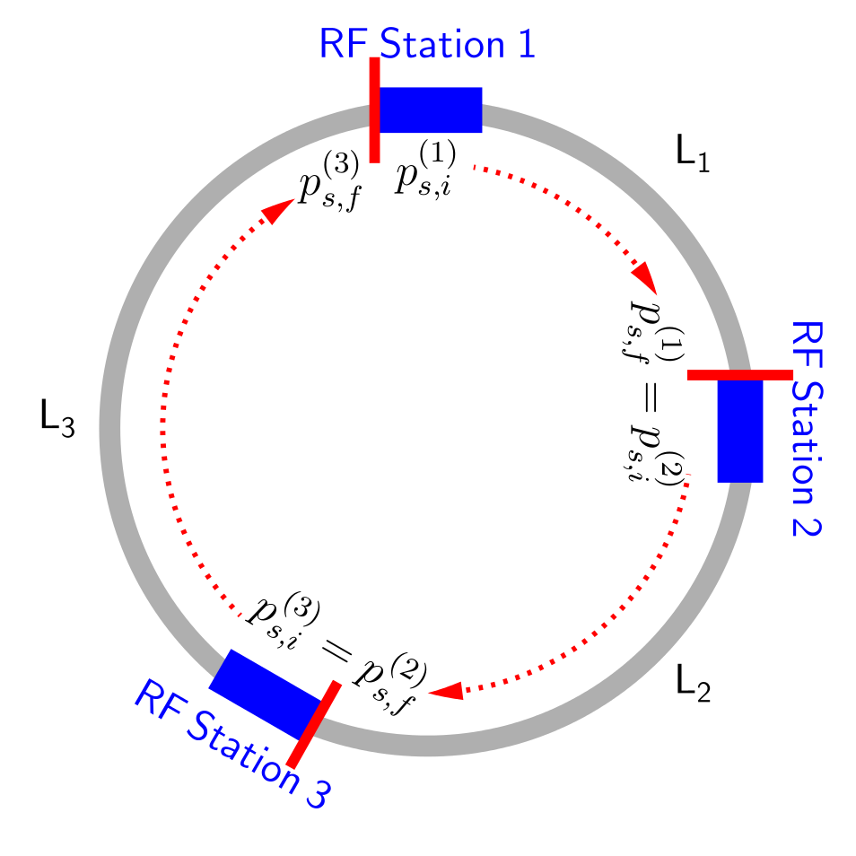The time step is fixed to be one turn, but the tracking can consist of multiple RingAndRFSection objects. In this case, the user should make sure that the lengths of the stations sum up exactly to the circumference or use the FullRingAndRF object in order to let the code pre-process the parameters. Each RF station may contain several RF harmonic systems which are considered to be in the same location. First, a kick from the cavity voltage(s) is applied, then an accelerating kick in case the momentum program presents variations, and finally a drift kick between stations.
- acceleration_kick = None¶
Acceleration kick

- alpha_order = None¶
Slippage factor up to desired order
- beta_r = None¶
- ... and derived relativistic quantities
- beta_ratio = None¶
Beta ratio 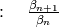
- counter = None¶
- Counter to keep track of time step (used in momentum and voltage)
- drift(beam)¶
The drift updates the longitudinal coordinate of the particle after applying the energy kick. The two options of tracking are: full, corresponding to the cases where beta is not considered constant and the slippage factor may be of higher orders; and simple, where beta is approximatively one and the slippage factor is of order 0. Corresponding to the equations:
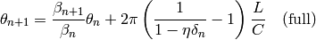
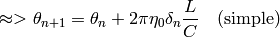
- harmonic = None¶
- Harmonic number list 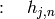
- kick(beam)¶
The Kick represents the kick(s) by an RF station at a certain position of the ring. The kicks are summed over the different harmonic RF systems in the station. The cavity phase can be shifted by the user via phi_offset. The increment in energy is given by the discrete equation of motion:
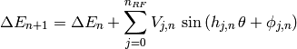
- kick_acceleration(beam)¶
KickAcceleration gives a single accelerating kick to the bunch. The accelerating kick is defined by the change in the design momentum (synchronous momentum). The acceleration is assumed to be distributed over the length of the RF station, so the average beta is used in the calculation of the kick. An extra increment in the equation of motion with respect to the Kick object is given by:
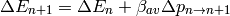
- length_ratio = None¶
- Import RF section parameters for RF kickLength ratio between drift and ring circumference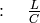
- momentum = None¶
- Import RF section parameters for accelerating kickMomentum (program) in [eV/c]

- n_rf = None¶
- Number of RF systems in the RF station 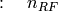
- phi_offset = None¶
- Phase offset list in [rad] 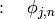
- solver = None¶
- Choice of solver for the driftUse ‘full’ for full eta solverUse ‘simple’ for 0th order eta solver
- track(beam)¶
- voltage = None¶
- Voltage program list in [V] 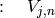
trackers.longitudinal_utilities module¶
Utilities to calculate Hamiltonian, separatrix, total voltage for the full ring.
| Authors: | Danilo Quartullo, Helga Timko, Alexandre Lasheen |
|---|
- trackers.longitudinal_utilities.hamiltonian(GeneralParameters, RFSectionParameters, theta, dE, delta, total_voltage=None)¶
Single RF sinusoidal Hamiltonian. For the time being, for single RF section only or from total voltage. Uses beta, energy averaged over the turn. To be generalized.
- trackers.longitudinal_utilities.is_in_separatrix(GeneralParameters, RFSectionParameters, theta, dE, delta, total_voltage=None)¶
Condition for being inside the separatrix. For the time being, for single RF section only or from total voltage. Single RF sinusoidal. Uses beta, energy averaged over the turn. To be generalized.
- trackers.longitudinal_utilities.separatrix(GeneralParameters, RFSectionParameters, theta, total_voltage=None)¶
Single RF sinusoidal separatrix. For the time being, for single RF section only or from total voltage. Uses beta, energy averaged over the turn. To be generalized.
- trackers.longitudinal_utilities.total_voltage(RFsection_list, harmonic='first')¶
Total voltage from all the RF stations and systems in the ring. To be generalized.